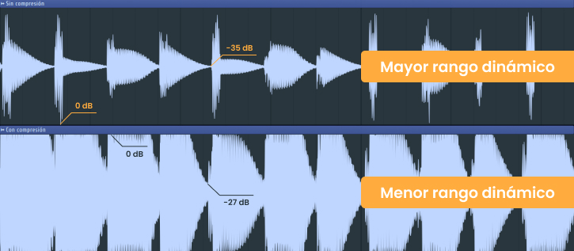

¿Qué es un compresor? Según Wikipedia: “En el campo del sonido profesional, un compresor es un procesador
electrónico de sonido destinado a reducir el margen dinámico de la señal sin que se note demasiado su
presencia. Esta tarea se realiza reduciendo la ganancia del sistema, cuando la señal supera un determinado
umbral.”
Ahora bien, es necesario tener ciertos cuidados al leer esta definición ya que es algo vaga y no del todo
acertada.
Comencemos por tratar de entender el concepto de “margen o rango dinámico”. Este refiere a la diferencia entre el
punto con el valor mínimo y el máximo de una señal de audio, medido en decibeles (dB). A mayor diferencia
entre ambos puntos, mayor rango dinámico.

En este caso particular, el resultado de la compresión en cuanto al rango dinámico, ha sido reducirlo en 8 dB.
¿Por qué? Muy sencillo, el valor mínimo de la señal de audio ha sido incrementado de -35 dB a -27 dB.
Una vez entendido este concepto fundamental acerca de la compresión, podemos pasar a los distintos usos y
objetivos de la misma.
Si bien es cierto que en algunos casos queremos que la presencia del compresor sea mínima y con el único
objetivo de reducir el rango dinámico, en otros deseamos todo lo contrario.
Este es el caso en el cual entra en juego la “esencia” de cada compresor, sea analógico o digital. Cada uno
de ellos analiza el audio entrante o “Input” de una manera particular y única, lo cual da como resultado una
salida o “Output” distinta para cada caso, aportando aquella esencia característica.
¿Cuáles son sus parámetros principales y cómo utilizarlos?
No todos los compresores poseen la misma cantidad de parámetros, así como los nombres para los mismos, sin embargo, estos 8 suelen estar en la mayoría de ellos.
Threshold: determina el
umbral
Parte inferior de una puerta o entrada. Se utiliza por extensión para indicar «entrada», «valor mínimo» o «lugar por el que pasar» en un sentido más general.
de volumen sobre el cual será aplicada la compresión. Una vez sobrepasado el umbral, el compresor se activará, reduciendo la amplitud de la señal entrante.
Threshold: determina el umbral de volumen sobre el cual será aplicada la compresión. Una vez sobrepasado el umbral, el compresor se activará, reduciendo la amplitud de la señal entrante.Knee: regula la transición al momento de activar la compresión, pudiendo ser más suave o más brusca, según el valor o modo establecido.
Ratio: representa la cantidad de reducción de ganancia sobre la señal. Una vez sobrepasado el Threshold, el Ratio se ocupará de decidir cuánta compresión aplicar sobre la misma. Se maneja en base a proporciones (2:1, 5:1, 8:1, etc.), es decir, cuántos dB terminan resultantes en el Output, respecto de la cantidad original. Un valor establecido de 5:1 significará que de cada 5dB de la señal original, obtendremos 1.
Attack: permite decidir cuánto tardará el compresor en activarse, una vez sobrepasado el Threshold. Posee valores medidos en unidades de “ms” o milisegundos. Un valor alto dará la sensación de una compresión más gradual, mientras que un valor bajo será más notorio y tenderá a producir distorsión sobre la señal debido al poco tiempo dado para reducir su amplitud.
Release: estipula el tiempo que tarda el compresor en volver a desactivarse, una vez realizada la compresión. Al igual que el Attack, posee valores medidos en unidades de milisegundos. Un valor alto hará que la señal regrese lentamente a su estado original, mientras que un valor bajo lo hará más de inmediato.
Lookahead: otorga la posibilidad de activar el compresor incluso algunos milisegundos antes de que la señal sobrepasante del Threshold entre por el mismo. Lo que realmente hace para lograr tal cometido es atrasar la señal entrante, dandole la oportunidad al compresor de activarse de antemano. No es un parámetro tan habitual como los demás.
Gain y Auto-Gain: es utilizado para devolver, disminuir o compensar el nivel a la señal de audio luego de aplicada la compresión. Si el compresor posee activada una opcion de Auto-Gain, estará compensando automáticamente la pérdida de volumen.
Mix: determina el porcentaje de aplicación sobre la señal. A los extremos de este parámetro suelen aparecer las palabras “Dry” (seco) y “Wet” (mojado), representando el 0% y el 100% respectivamente. Cuando el porcentaje aplicado no es ninguno de los extremos (digamos 50%), parte de la señal entrante quedará sin procesar y parte entrará como Input al compresor. En estos casos se considera que se trata de una “compresión paralela o New York”.


{kind=link}